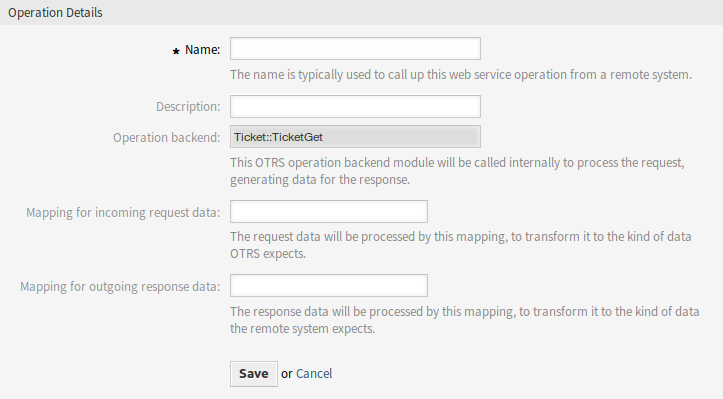

Webszolgáltatások¶
Egy összekapcsolt világban a jegyrendszernek képesnek kell lennie arra, hogy reagáljon más rendszerek kéréseire, valamint kéréseket vagy információkat küldjön más rendszereknek:
- CRM rendszereknek
- Projektkezelő rendszereknek
- Dokumentációkezelő rendszereknek
- és egyéb rendszereknek
A jegyrendszert más szolgáltatásoknak is el kell érniük egy ügyintéző kézi beavatkozása nélkül.
Az OTRS ezt a követelményt az Általános felület segítségével támogatja. Felruházza az adminisztrátort azzal, hogy parancsfájlírási tudás nélkül hozzon létre webszolgáltatást egy bizonyos feladathoz. Az OTRS reagál a bejövő REST vagy SOAP kérésekre, és objektumokat hoz létre, vagy átlátható módon biztosít objektumadatokat más rendszerekhez.
A webszolgáltatás egy kommunikációs módszer két rendszer között, a mi esetünkben az OTRS és egy távoli rendszer között. A beállításában a művelet vagy a meghívó határozza meg a kommunikáció irányát, valamint a leképezés és az átvitel gondoskodik arról, hogy az adatokat hogyan kell fogadni és értelmezni.
A beállításában lehet meghatározni, hogy a webszolgáltatás milyen műveleteket hajthat végre belsőleg (művelet), az OTRS kérés milyen műveleteket hajthat végre a távoli rendszeren (meghívók), az adatok hogyan lesznek átalakítva az egyik rendszerről a másikra (leképezés), és mely protokollon keresztül kerüljön sor a kommunikációra (átvitel).
Az általános felület az a keretrendszer, amely lehetővé teszi webszolgáltatások létrehozását az OTRS-hez egy előre meghatározott módon a már elkészített építőkockák használatával, amelyek egymástól függetlenek és kicserélhetők.
Használja ezt a képernyőt a rendszeren lévő webszolgáltatások kezeléséhez. Egy friss OTRS telepítés alapértelmezetten nem tartalmaz webszolgáltatást. A webszolgáltatás kezelésének képernyője a Folyamatok és automatizálás csoport Webszolgáltatások moduljában érhető el.

Webszolgáltatás kezelése képernyő
Webszolgáltatások kezelése¶
Egy webszolgáltatás létrehozásához:
- Kattintson a Webszolgáltatás hozzáadása gombra a bal oldalsávban.
- Töltse ki a szükséges mezőket.
- Kattintson a Mentés gombra.

Új webszolgáltatás létrehozása képernyő
Egy webszolgáltatás szerkesztéséhez:
- Kattintson egy webszolgáltatásra a webszolgáltatások listájában.
- Módosítsa a mezőket.
- Kattintson a Mentés vagy Mentés és befejezés gombra.

Webszolgáltatás szerkesztése képernyő
Egy webszolgáltatás törléséhez:
- Kattintson egy webszolgáltatásra a webszolgáltatások listájában.
- Kattintson a Webszolgáltatás törlése gombra a bal oldalsávban.
- Kattintson a Törlés gombra a megerősítő párbeszédablakban.

Webszolgáltatás törlése képernyő
Egy webszolgáltatás klónozásához:
- Kattintson egy webszolgáltatásra a webszolgáltatások listájában.
- Kattintson a Webszolgáltatás klónozása gombra a bal oldalsávban.
- Adjon egy új nevet a webszolgáltatásnak.

Webszolgáltatás klónozása képernyő
Egy webszolgáltatás exportálásához:
- Kattintson egy webszolgáltatásra a webszolgáltatások listájában.
- Kattintson a Webszolgáltatás exportálása gombra a bal oldalsávban.
- Válasszon egy helyet a számítógépén az
Export_ACL.ymlfájl mentéséhez.
Figyelem
A webszolgáltatás beállításaiban tárolt összes jelszó egyszerű szöveges formátumban lesz exportálva.
Egy webszolgáltatás beállítási előzményeinek megtekintéséhez:
- Kattintson egy webszolgáltatásra a webszolgáltatások listájában.
- Kattintson a Beállítási előzmények gombra a bal oldalsávban.

Webszolgáltatás-beállítás előzményei képernyő
Egy webszolgáltatás hibakeresőjének használatához:
- Kattintson egy webszolgáltatásra a webszolgáltatások listájában.
- Kattintson a Hibakereső gombra a bal oldalsávban.

Webszolgáltatás hibakereső képernyő
Egy webszolgáltatás importálásához:
- Kattintson a Webszolgáltatás hozzáadása gombra a bal oldalsávban.
- Kattintson a Webszolgáltatás importálása gombra a bal oldalsávban.
- Kattintson a Tallózás… gombra a párbeszédablakban.
- Válasszon egy előzőleg exportált
.ymlfájlt. - Adjon egy nevet az importált webszolgáltatásnak (elhagyható). Egyébként a név a beállítófájl nevéből lesz átvéve.
- Kattintson az Importálás gombra.
Webszolgáltatás beállításai¶
A következő beállítások akkor érhetők el, ha hozzáadja vagy szerkeszti ezt az erőforrást. A csillaggal jelölt mezők kitöltése kötelező.
Webszolgáltatás általános beállításai¶

Webszolgáltatás beállításai – általános
- Név *
- Ennek az erőforrásnak a neve. Bármilyen típusú karakter beírható ebbe a mezőbe, beleértve a nagybetűket és a szóközt is. A név megjelenik az áttekintő táblázatban.
- Leírás
- Mint a megjegyzés, csak hosszabb szöveg adható meg ide.
- Távoli rendszer
- Hibakeresési küszöbszint
Az alapértelmezett érték a Hibakeresés. Ha ilyen módon állítjuk be, akkor az összes kommunikációs napló regisztrálva lesz az adatbázisban. Minden későbbi hibakeresési küszöbszint érték korlátozóbb és eldobja az annál alacsonyabb rendű kommunikációs naplókat, mint amely a rendszeren be van állítva.
A hibakeresési küszöbszint szintjei (az alacsonyabbtól a magasabbig):
- Hibakeresés
- Információ
- Értesítés
- Hiba
- Érvényesség
- Állítsa be ennek az erőforrásnak az érvényességét. Minden erőforrás csak akkor használható az OTRS-ben, ha ez a mező érvényes értékre van állítva. Ennek a mezőnek az érvénytelen vagy átmenetileg érvénytelen értékre állításával letiltja az erőforrás használatát.
Szolgáltató webszolgáltatás beállításai¶

Webszolgáltatás beállításai – OTRS mint szolgáltató
- Hálózati átvitel
Annak kiválasztása, hogy mely hálózati átvitelt szeretné használni a webszolgáltatással. A lehetséges értékek: HTTP::REST és HTTP::SOAP.
Megjegyzés
Az átviteli módszer kiválasztása után el kell mentenie a beállítást a Mentés gombra kattintva. Egy Beállítás gomb fog megjelenni a mező mellett.
- Beállítás
- A Beállítás gomb csak akkor látható, miután egy hálózati átvitel kiválasztásra és mentésre került. Nézze meg a lenti OTRS mint szolgáltató – HTTP::REST és OTRS mint szolgáltató – HTTP::SOAP fejezeteket.
- Művelet hozzáadása
Ez a beállítás csak akkor látható, miután egy hálózati átvitel kiválasztásra és mentésre került. Egy művelet választásakor meg fog nyílni egy új képernyő annak beállításához.
Webszolgáltatás beállításai – OTRS mint szolgáltató – művelet
OTRS mint szolgáltató – HTTP::REST¶

Webszolgáltatás beállításai – OTRS mint szolgáltató – HTTP::REST
OTRS mint szolgáltató – HTTP::SOAP¶

Webszolgáltatás beállításai – OTRS mint szolgáltató – HTTP::SOAP
Kérelmező webszolgáltatás beállításai¶

Webszolgáltatás beállításai – OTRS mint kérelmező
- Hálózati átvitel
Annak kiválasztása, hogy mely hálózati átvitelt szeretné használni a webszolgáltatással. A lehetséges értékek: HTTP::REST és HTTP::SOAP.
Megjegyzés
Az átviteli módszer kiválasztása után el kell mentenie a beállítást a Mentés gombra kattintva. Egy Beállítás gomb fog megjelenni a mező mellett.
- Beállítás
- A Beállítás gomb csak akkor látható, miután egy hálózati átvitel kiválasztásra és mentésre került. Nézze meg a lenti OTRS mint kérelmező – HTTP::REST és OTRS mint kérelmező – HTTP::SOAP fejezeteket.
- Hibakezelési modul hozzáadása
Ez a beállítás csak akkor látható, miután egy hálózati átvitel kiválasztásra és mentésre került. Egy művelet választásakor meg fog nyílni egy új képernyő annak beállításához.

Webszolgáltatás beállításai – OTRS mint szolgáltató – hibakezelési modul
OTRS mint kérelmező – HTTP::REST¶

Webszolgáltatás beállításai – OTRS mint kérelmező – HTTP::REST
OTRS mint kérelmező – HTTP::SOAP¶

Webszolgáltatás beállításai – OTRS mint kérelmező – HTTP::SOAP